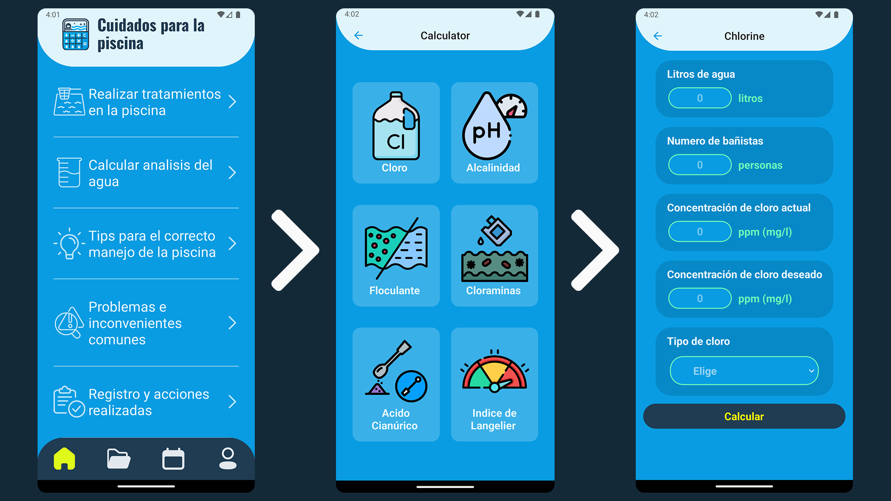

Pool Care (aplicacion movil para piscinas)
Una app móvil diseñada para facilitar el mantenimiento de piscinas, asegurando su óptima calidad de agua.
Proporciona herramientas de cálculo, guías detalladas y recordatorios para un cuidado eficiente y
efectivo.

Funciones principales:
- ✅ Cálculo preciso de químicos: Cloro, alcalinidad, floculante, cloraminas, ácido cianúrico, índice de saturación de Langelier y reducción de cloro.
- ✅ Guías de mantenimiento: Instrucciones detalladas para limpieza periódica, tratamiento de choque, llenado e invernación.
- ✅ Resolución de problemas comunes: Agua turbia, cloraminas, manchas, pH desbalanceado y más.
- ✅ Registro y seguimiento: Historial de mediciones y cálculos con opción de edición y eliminación.
- ✅ Recordatorios inteligentes: Notificaciones para realizar tareas de mantenimiento.
- ✅ Compatibilidad multilingüe: Disponible en portugués, francés, español e inglés.
Tecnologías utilizadas:
- Algoritmos de cálculo para determinar cantidades exactas de productos químicos.
- Gestión de datos históricos para seguimiento del mantenimiento.
- Interfaz intuitiva y optimizada para una experiencia fluida.